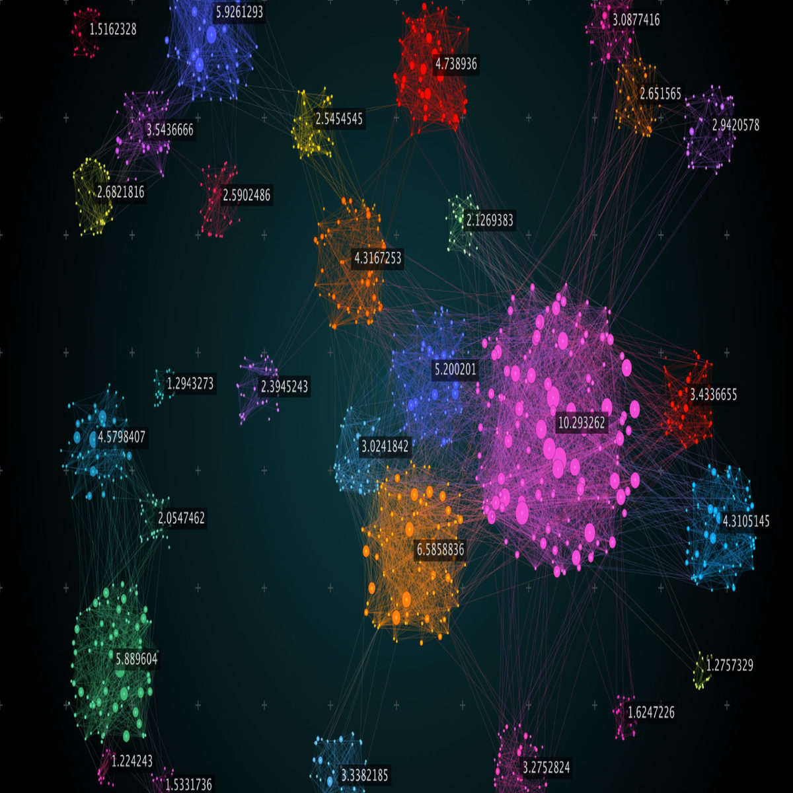
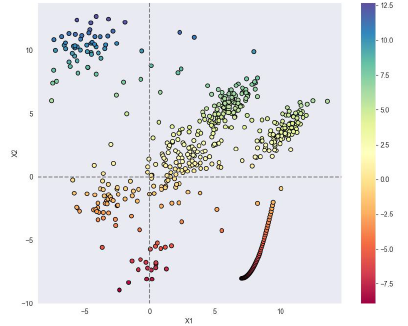
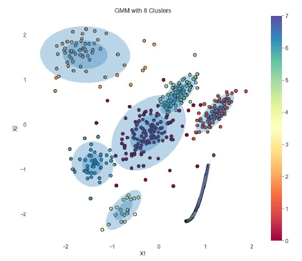
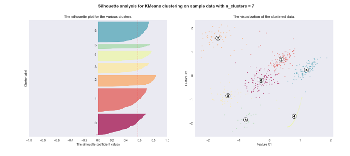

on a simulated dataset
The goal of the project is the apply clustering algorithms to group closely related data points on a 2-D grid and analyze which algorithm has the best performance in our dataset. There are numerous applications of clustering. One example, clustering can be used to predict if an engine is stable based on prior information of stable engines. In our case, we used clustering on a sample dataset.
The program drew data samples from a multivariate-gaussian distribution with specified mean and covariance. Two clustering algorithm was was applied to this data-set. They are Gaussian Mixture Model(GMM) and K-Means Algorithm. Optimal number of clusters were found using Bayesian Information Criterion(BIC) and Elbow Method for GMM and K-Means, respectively. BIC yielded 8 clusters and Elbow method yielded 7 clusters.
Silhouette Score was used as an evaluation metric. This score ranges from -1 to 1, where 1 being the best and -1 being the worst. A score near 0 suggests overlapping clusters. It yielded a score of 0.57 and 0.53 for K-Means and GMM algorithm, respectively. On this data-set, K-Means algorithm performed slightly better.
Two people including me worked in this project. Used python. Libraries such as sklearn, pandas, numpy, matplotlib etc. were used.